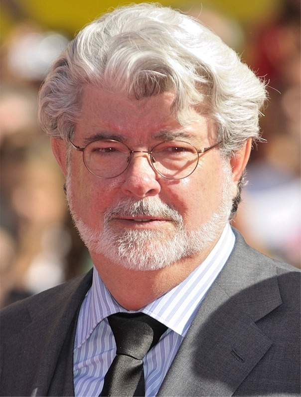

Star Wars (Brasil: Guerra nas Estrelas / Portugal: Guerra das Estrelas) é uma franquia do tipo
space opera estadunidense criada pelo cineasta George Lucas, que conta com uma série de nove
filmes de fantasia científica e dois spin-offs. O primeiro filme foi lançado apenas com o título
Star Wars, em 25 de maio de 1977, e tornou-se um fenômeno mundial inesperado de cultura popular,
sendo responsável pelo início da "era dos blockbusters", que são superproduções cinematográficas
que fazem sucesso nas bilheterias e viram franquias com brinquedos, jogos, livros, etc. Foi
seguido por duas sequências, The Empire Strikes Back e Return of the Jedi, lançadas com
intervalos de três anos, formando a trilogia original, que segue o trio icônico formado por Luke
Skywalker, Han Solo e Princesa Leia, que luta pela Aliança Rebelde para derrubar o tirano
Império Galáctico; paralelamente ocorre a jornada de Luke para se tornar um cavaleiro Jedi e a
luta contra Darth Vader, um ex-Jedi que sucumbiu ao Lado Sombrio da Força e ao Imperador.
Depois de 16 anos sem filmes novos, uma nova trilogia chamada de prequela teve início em 1999,
com The Phantom Menace. Esta volta no tempo para contar como Anakin Skywalker se transformou em
Darth Vader e acompanha a queda da Ordem Jedi e da República Galáctica, substituída pelo
Império. Sendo também lançada com intervalos de três anos, com o último lançado em 2005. As
reações à trilogia original foram extremamente positivas, enquanto a trilogia prequela recebeu
reações mistas tanto da crítica especializada como do público. Mesmo assim, todos os filmes
foram bem sucedidos nas bilheterias e receberam indicações ou ganharam prêmios no Óscar.
Em 2008, foi lançado o filme de animação Star Wars: The Clone Wars, um spin-off piloto para
série de animação de mesmo título. Neste ano foi divulgado a soma da bilheteria arrecadada com
os seis episódios existentes, que totalizava aproximadamente 4,41 bilhões de dólares. Após a
estreia do episódio VII e Rogue One, este valor ultrapassou 7 bilhões, fazendo de Star Wars a
terceira série cinematográfica com maior bilheteria da história, atrás dos filmes do Universo
Cinematográfico Marvel e do Mundo Bruxo de J. K. Rowling. É a maior franquia da história do
cinema, com a soma dos filmes e produtos equivalente a mais que 30 bilhões de dólares. Esta
gerou diversos subprodutos, incluindo jogos eletrônicos, desenhos animados, livros e quadrinhos,
o que resultou na criação do universo expandido da saga. Em 2012, a The Walt Disney Company
comprou a Lucasfilm por 4,05 bilhões de dólares e anunciou uma nova trilogia de filmes, chamada
de "trilogia sequela", uma sequência que continuará a saga da família Skywalker após Retorno de
Jedi. Esta trilogia terá um intervalo de dois anos entre os filmes, e nesses intervalos, a
Disney lançará spin-offs no universo expandido, que se passam durante os episódios das
trilogias. O primeiro capítulo dessa fase, sob o título de The Force Awakens, estreou em 18 de
dezembro de 2015, recebendo aclamação da crítica, e tornou-se a maior estreia da franquia.
Seguido por, Rogue One, o primeiro spin-off lançado em 16 de dezembro de 2016.
História
A série teve início com o simples título Star Wars, escrito e dirigido por George Lucas, lançado
em 25 de maio de 1977. Na época da sua estreia se tornou a maior bilheteria de todos os tempos,
arrecadando US$ 775 398 007 milhões de dólares e ganhando sete prêmios no Óscar. A 20th Century
Fox desacreditando um filme que ambientado no espaço, permitiu que George Lucas tivesse todos os
direitos do filme. O sucesso garantiu a ele dinheiro suficiente para abrir sua própria empresa
cinematográfica: a Lucasfilm e, o filme foi transformado em uma franquia e série, ganhando
produtos derivados. Em 1978, Star Wars teve um especial de Natal para TV, o The Star Wars
Holiday Special exibido pela CBS, sendo notório por ter uma grande recepção negativa e nunca ter
sido exibido novamente na televisão ou lançado em DVD. George Lucas não teve envolvimento
significativo na produção e demonstrou decepção com o resultado final. Seguido pelo fiasco
natalino, vieram sequências de sucesso nos cinemas: The Empire Strikes Back lançado em 21 de
maio de 1980, considerado pela crítica e público o melhor filme da série, pelo seu equilíbrio
entre momentos sombrios e dramáticos. A trilogia foi fechada pelo Return of the Jedi lançado em
25 de maio de 1983, que apesar do sucesso comercial recebeu críticas pelo seu tom leve. Após o
lançamento de O Império Contra-Ataca, Star Wars (1977) ganhou o subtítulo "Episódio IV: Uma Nova
Esperança". Isto ocorreu porque na época George Lucas tinha anunciado a "trilogia prequela",
lançada no final dos anos 90, e a trilogia original seria os capítulos 4, 5 e 6 da saga. Na
década de 80, por causa do sucesso dos ewoks entre as crianças, foram lançados os filmes para
TV: Caravan of Courage: An Ewok Adventure (1984) e sua sequência, Ewoks: The Battle for Endor
(1985). Os Ewoks também ganharam uma série animada exibida entre 1985-87 na ABC assim como os
droids C3PO e R2-D2 tiveram também na ABC uma série animada entre 1985-86.

George Lucas, o criador da série Star Wars, se inspirou no conceito
mitológico de Jornada do Herói do Joseph Campbell para criar a série.
George Lucas, o criador da série Star Wars, se inspirou no conceito mitológico de
Jornada do Herói do Joseph Campbell para criar a série. Nos relançamentos para o cinema
em 1997, para comemorar o 20° aniversário de Star Wars, foram inseridas modificações nos
filmes originais, motivadas primariamente pelo avanço da tecnologia de efeitos
especiais, o que permitira a realização de cenas impossíveis de serem feitas na época
das filmagens originais. George Lucas continuou a modificar a trilogia original em
relançamentos subsequentes, como por exemplo no lançamento do primeiro DVD em 21 de
setembro de 2004. A recepção dessas edições especiais foi mista, com fãs criando
petições e edições próprias para restaurar cópias da trilogia original.
Durante a convenção "Star Wars Celebration V" (em Agosto de 2010), George Lucas confirmou que
iria relançar toda a saga em Blu-Ray, pois em janeiro de 2010, o presidente da 20th Century Fox,
Mike Dunn, anunciou que os filmes seriam lançados em setembro de 2011. Os discos incluem
documentários, entrevistas, cenas apagadas e inéditas, além de mais modificações. Mais de duas
décadas após o lançamento do filme original Star Wars, a Trilogia Prequela começou com o
aguardado The Phantom Menace, lançado em 19 de maio de 1999. Mesmo sendo um sucesso de
bilheteria, teve recepção mista da crítica e do público. Foi seguido por: Attack of the Clones,
lançado em 16 de maio de 2002, também um sucesso de bilheteria com morna recepção e por fim
Revenge of the Sith, lançado em 19 de maio de 2005. É o mais elogiado pela crítica e pelo
público da trilogia prequela, e listado pelo Rotten Tomatoes em 2007 como um dos "100 melhores
filmes de ficção científica de todos os tempos".
Durante a produção da trilogia prequela, George Lucas disse várias vezes que não iria produzir
uma nova trilogia, ou sequência de Return of the Jedi porque "a saga é sobre a tragédia de
Anakin Skywalker, e a história acaba quando Luke redime seu pai". Apesar de existir rumores e
relatos que ele escreveu uma história pós-Retorno de Jedi sobre os netos de Anakin, George Lucas
disse que eram apenas sinopses vagas, sem uma história. Em 2003 a Lucasfilm fecha contrato com o
animador Genndy Tartakovski para a produção de uma série animada em 2D que seria exibida no
canal Cartoon Network intitulada Guerras Clônicas, posteriormente lançada em DVD em dois
volumes. A série servia de ponte para a chegada de Revenge of the Sith aos cinemas, pois narra
os acontecimentos que imediatamente antecedem o início do terceiro filme, incluindo o momento
onde Mestre Jedi Mace Windu consegue usar a Força para pressionar o peito do General Grievous
quando entrava em sua nave com o sequestrado Chanceler Palpatine, explicando assim o motivo de
sua tosse. Em 18 de agosto de 2008, foi lançado Star Wars: A Guerra dos Clones, um filme de
animação via computação gráfica que serviria como introdução para série de TV do mesmo título.
Sendo a segunda série de animação sobre a guerra que ocorre entre os episódios II e III, também
exibida pelo Cartoon Network entre 2008 a 2014. A série apresentou uma nova personagem
principal, Ahsoka Tano, padawan de Anakin. Clone Wars foi substituída por Star Wars Rebels, que
ocorre entre os episódio III e IV, primeira série de Star Wars lançada pela Disney, em outubro
de 2014, exibida atualmente no Disney XD. Em 2012, George Lucas vendeu a produtora Lucasfilm
para a The Walt Disney Company por 4 bilhões e uma nova trilogia foi anunciada. Lucas participou
apenas como consultor criativo nos novos filmes, afirmando que: "Eu sempre disse que não iria
fazer mais nada, e não vou, mas isso não significa que eu não possa deixar a Kathleen
(presidente da Lucasfilm) fazer mais". A história do episódio VII tem base em uma breve sinopse
escrita por George Lucas com roteiro de Michael Arndt, Lawrence Kasdan e J.J. Abrams (também
diretor do filme). O primeiro filme da nova trilogia chamado The Force Awakens, estreou em
circuito mundial em 17 de dezembro de 2015, tendo em apenas 5 dias faturamento de 300 milhões
nos Estados Unidos e mais de 600 milhões ao redor do mundo, tornando-se a maior estreia de todos
os tempos. Em 2005 George Lucas tinha anunciado o desenvolvimento do projeto de uma série de TV
live-action (com atores reais) ambientada nos anos entre os Episódios III e IV, porém com enredo
não focado nos personagens conhecidos mas em situações de conflitos políticos entre planetas e
contrabandistas. O projeto chegou a tal estágio que alguns roteiristas concluíram histórias para
serem usadas nos novos episódios, porém em 2011 o produtor Rick McCallum declarou que o projeto
seria engavetado aguardando uma melhor evolução da tecnologia, visando redução de custos. Com a
aquisição da franquia pela Disney, o material da série live-action teria sido aproveitado em
Star Wars Rebels. Em 2013, o diretor executivo da Disney, Bob Iger, confirmou o desenvolvimento
de dois filmes antológicos dentro do universo expandido de Star Wars, com o primeiro deles,
Rogue One, que estreou em 16 de dezembro de 2016. Diferente da saga principal, as antologias não
se focam na família Skywalker.